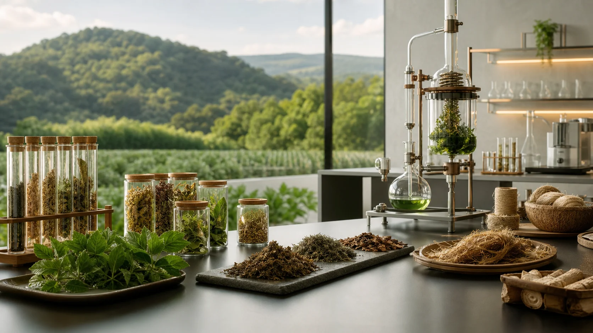
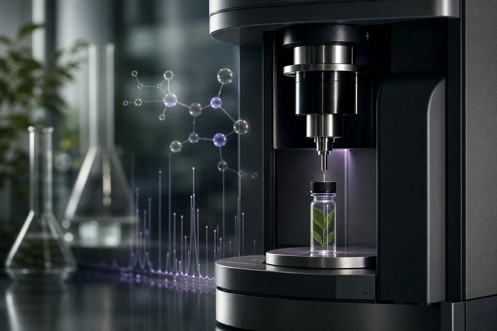
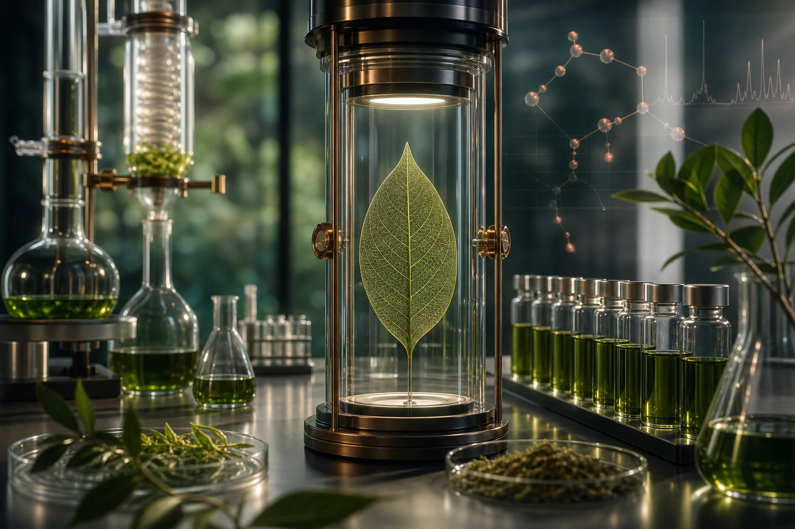
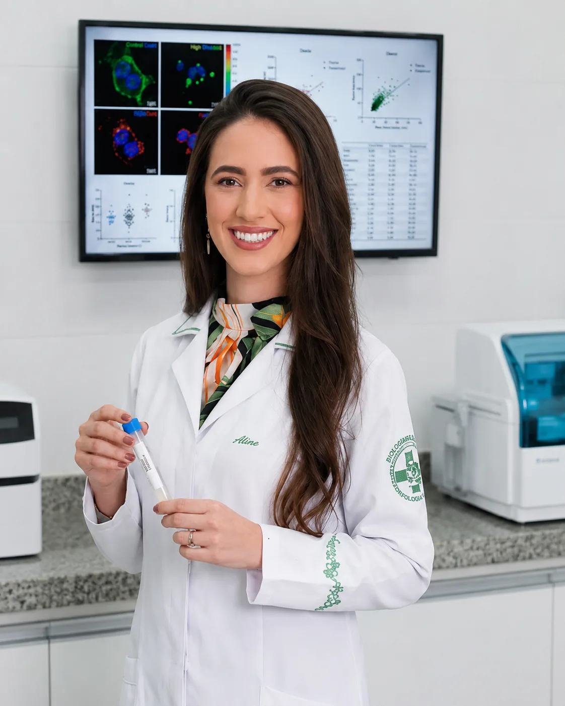
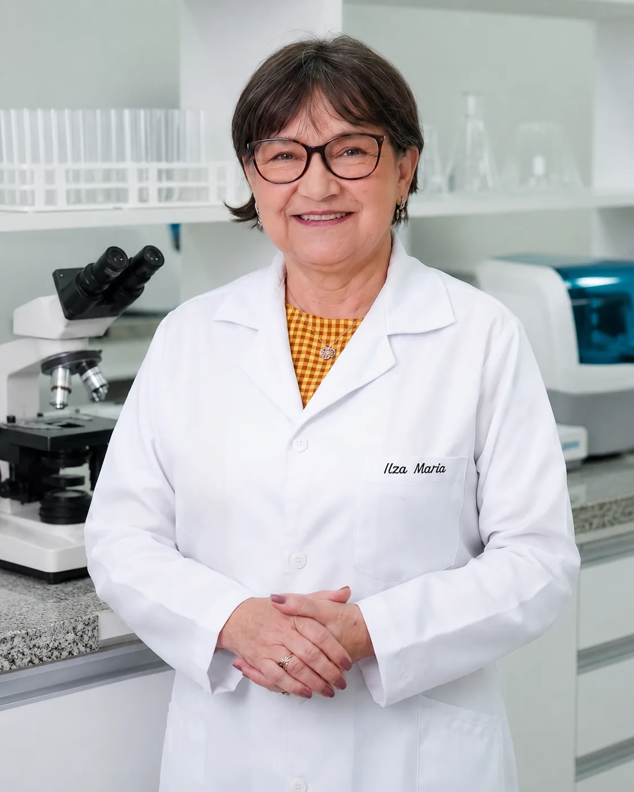
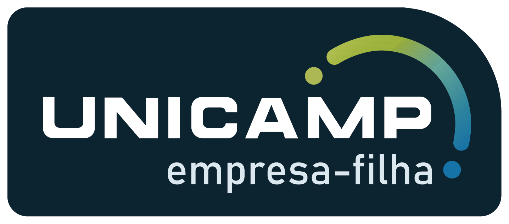

Análise fitoquímica
Identificação, caracterização e avaliação de compostos presentes em matrizes naturais.
Fitoquímica aplicada →PHYTOCHEM™
Transformamos biodiversidade em soluções aplicadas com evidências científicas.
Conectamos biodiversidade, fitoquímica e tecnologia analítica ao desenvolvimento de soluções com bioativos naturais, rastreabilidade, isolamento e validação técnico-científica.
Pesquisa • Fitoquímica • Isolamento • Evidências • Aplicações industriais
A Phytochem une P&DI, fitoquímica aplicada e tecnologia analítica para transformar biodiversidade em soluções com bioativos naturais, evidências técnicas, rastreabilidade e aplicações industriais.
Mais do que um laboratório, atuamos como uma plataforma científica para o desenvolvimento de soluções naturais com precisão, método, evidências e visão de mercado.
Da análise ao desenvolvimento: suporte técnico para empresas que desejam criar, validar, padronizar e escalar soluções com bioativos naturais.
Identificação, caracterização e avaliação de compostos presentes em matrizes naturais.
Fitoquímica aplicada →Soluções para aplicações cosméticas, farmacêuticas e industriais.
Inovação e P&DI →Parâmetros técnicos, fingerprints, especificações e controle de qualidade.
Garantia técnica →Métodos analíticos voltados ao controle, validação e geração de evidências.
Evidências científicas →Suporte científico para projetos orientados à inovação e aplicações.
Pesquisa aplicada →Orientação estratégica para desenvolver, validar e posicionar soluções.
Estratégia científica →Integramos ciência, dados, biodiversidade e tecnologia para acelerar o desenvolvimento de soluções com bioativos naturais.
Análise técnica para identificar oportunidades estruturadas em bioativos naturais e aplicações de alto valor.
Pesquisa analítica guiada por dados, evidências e caracterização molecular.
Frações direcionadas com foco em rendimento, estabilidade fitoquímica e aplicação.
Evidências consistentes para transformar descobertas naturais em soluções aplicáveis.
Da biodiversidade às aplicações com bioativos naturais, por meio de evidências, isolamento, validação e direcionamento técnico.
Uma jornada científica independente, orientada à obtenção, purificação e validação de compostos naturais com precisão analítica.
Origem responsável e seleção criteriosa.
Tratamento técnico para preservar o potencial químico.
Processos dirigidos por rendimento e seletividade.
Separação orientada pelo perfil fitoquímico.
Refinamento progressivo de frações de interesse.
Obtenção de compostos com identidade definida.
Elucidação e confirmação técnico-analítica.
Evidências consistentes para aplicações futuras.
Soluções rastreáveis e suporte técnico-científico para mercados de alta exigência.
Bioativos naturais e suporte técnico para formulações premium.
Compostos naturais, padronização e suporte ao desenvolvimento.
Pesquisa, isolamento, validação e documentação de alto rigor.
Diferenciação científica para produtos de valor agregado.
Ingredientes naturais rastreáveis, consistentes e diferenciados.
Apoio a universidades, startups e projetos colaborativos.
Sustentabilidade como método: origem responsável, rastreabilidade, eficiência, valorização da biodiversidade e menor impacto ambiental.

Valorização científica, legal e sustentável dos recursos naturais.
Integração responsável com territórios produtivos e parceiros.
Abordagem ética, respeito cultural e observância legal.
Eficiência, redução de resíduos e racionalidade técnica.
Controle documental desde a origem até a aplicação.
Upcycling de coprodutos em novas oportunidades de aplicação.
Conhecimento e evidências para empresas e parceiros que priorizam inovação botânica aplicada.
Consistência analítica como base para inovação com bioativos.

EVIDÊNCIAS · 5 MINO papel da química analítica na confiança e diferenciação.

P&DI · 8 MINUm caminho orientado por ciência, dados e visão de mercado.
Parceiras estratégicas para empresas, laboratórios e instituições que buscam rigor técnico, evidências e inovação aplicada.

Liderança científica e empreendedora com atuação em pesquisa, desenvolvimento e estruturação de soluções com bioativos naturais.
Ver LinkedIn →
Pesquisadora com ampla experiência em produtos naturais, fitoquímica aplicada e desenvolvimento científico.
Ver LinkedIn →Conecte-se com a PHYTOCHEM™ por nossos canais oficiais.
A PHYTOCHEM™ integra a rede de empresas-filhas da Unicamp, fortalecendo sua conexão com pesquisa, empreendedorismo científico e inovação aplicada.

Converse com a PHYTOCHEM™ para estruturar, validar ou desenvolver soluções com bioativos naturais, rastreabilidade técnica e visão de mercado.